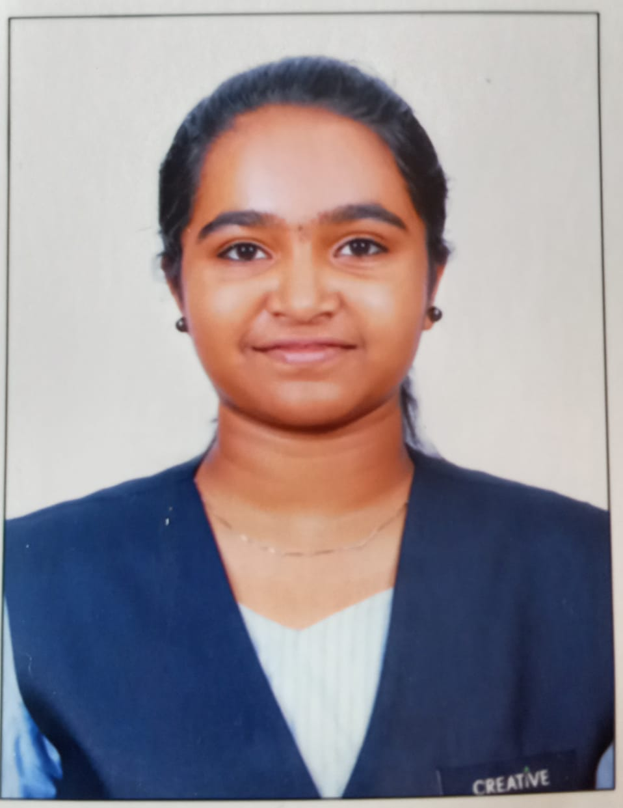

This is all about me
Hello everyone!I am H. Anisha Shanbhag from Kokkarne, Udupi district. I finished my schooling in SMS English Medium School Brahmavara and PUC in Creative PU college,Karkala,currently pursuing my engineering degree in NMAMIT,Nitte.I have gained exposure through workshops on graphic designing, Python, and AIML, as well as a team survey project in a wood industry. Creativity is my strength, and I enjoy expressing it through drawing, crafts, baking, and cooking.